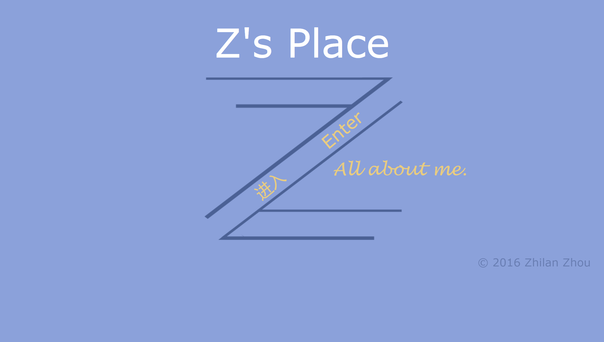
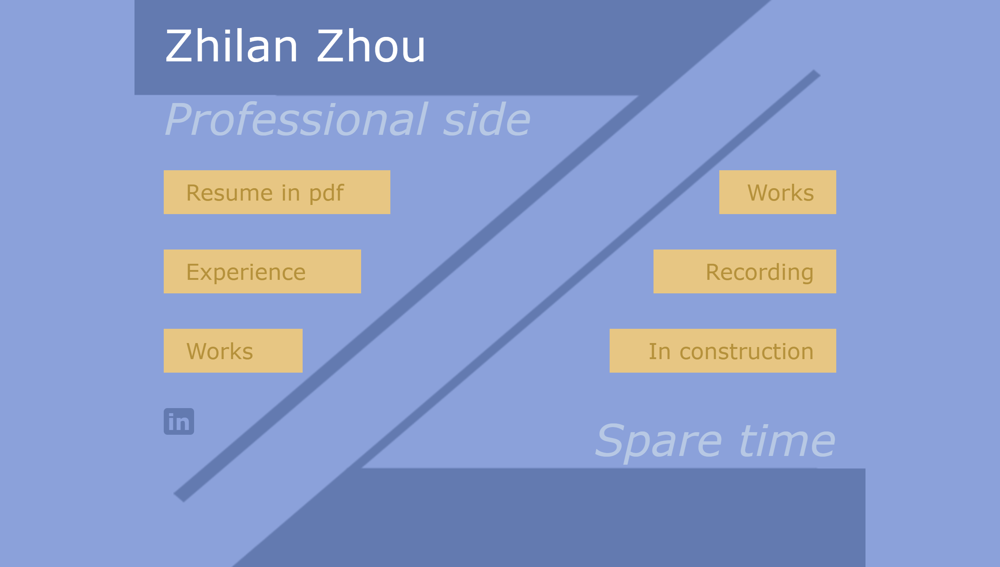

Works
ReturnThis is a project with a 4-people group to help managing rooms for the UNC Internal Medicine Clinic. (The actual webapp itself is protected now for security reason. However, most design information and code can be found under Formal Deliverables and Other Deliverables.)
A simple maze game that the character can jump through protals to reach the goal. Language: System Verilog and MIPS.
Language: System Verilog.
The problem sets for my database course. Language: mainly Python.
Small projects for my OS course. Developing a shell step by step. Also including a remote shell. Language: C.
Small projects for my web programming course. Including a webapp game. Language: html, css, Javascript, php.
The problem sets for my Bioalgorithm course. Language: Python.
This is a group project on redesigning the UI for an existing website which belongs to UNC Health Info Library.
I participated in each part of the final report and did the summary.
Things will change. A lot of details are changed though the whole website in 2018 to meet some of the current common sence in design, like fonts, partial layouts, etc. The key vision stays the same.
The font family is Noto Sans now. One main aim here is to unify the text though the whole website, including Latin character, Chinese character, Hiragana and Katakana. This project is a milestone, and it is one of the most important font family now in generic CJK.
This is a poster series of Futura, Garamond and Univers.
The final project for my design course. A poster for visualizing data of foreign born population in North Carolina.
The original motivation for creating this site is that I realized that I did need a place to show myself. It has been about more than four years that I nearly used social media to post nothing. I do have facebook or twitter account, but the most active period in history for my twitter account is the time when it had been hacked. I’m not used to writing things on social media so I simply don’t use them now. But still, I have something to show the world. Naturally I came up with the idea about open a website. At first I thought about blog, that is also the reason why I could use WordPress now. However, after I learned the syntax and started to write my own theme, I feel like this blog will become another twitter account. Still, I don’t have the habit to post an article or drawing regularly, and what I really want to show others should not became the earliest post then nobody will click and see it. Then it is this website. It is simple, and not that dynamic. I don’t have that much to say, to use a database and a MVC frame. So is it.
Probably the second hardest layout. The prototype of type logo ‘Z’ of mine was created far before the website’s birth. Word starting from ‘Z’ is not that common in typical western names, so when I considered to use some parts of my name to create my logo, I decided to use ‘Z’ immediately. (Here are some alternative plans of the logo.) Although this logo probably will only be used on the website for a long time, but I still want it to be simple enough to easily adapted to other situations. That’s why the logo is mono-color. What’s more, the shape of Z gives me the inspiration of separating main page in two parts.
The hardest layout. I have about come up with more than 10 versions of this page during the process. Some of them are very conservative like what I used finally for content-based pages. However, just like what I mentioned in the “Opening page” part, from time to time I felt like I might use the logo to create something differently. The separation style of the main page reminded me of the plagiarism story years ago about a designer’s personal website which splits in two parts: designer and programmer. It was well designed so a lot of websites copied its layout.
Inspired by that, at first I also thought about use the logo to naturally separate my two identity: programmer and designer. But then I found myself stuck: could that summarize myself? Is these two aspects that I really want to show to others? The answer is “no”. Leave out my hobbies, I’m not me anymore. Then it is clear what I should write down.
It’s hard to choose glyphs for the website. Nowadays, sans-serif typeface plays the main role in the screen UI design. Though we have retina screen on Apple products that could simulate the resolution of printed products, low-resolution screens still widely exist so serif typeface is still not a better choice.
Then the problem became to choose a sans-serif typeface. Helvetica Neue will be the choice never getting wrong. I did see a lot of excellent website using Helvetica Neue. But probably I was interfered by Robin Williams too much, Helvetica family is not that interesting to me. Just because it never gets wrong. I already have an interesting main page, so the glyph should also be interesting in some sense.
Personally, I think humanist design is the most vivid among all. Stroke modulation brings something different in its design. Why finally Verdana? One is that it is widely supported, so the loading time will be short. Other things come from intuition: just try it and see.
I'm here!


A course work for my English class, in which we needed to create a brochure to introduce one kind of disease.
A course work for my Japanese class. We played a role of travel agent and introduce our product for a certain perfecture in Japan.
A practice logo (with other visual elements design) for a study help website.
Undergoing Project.
The final paper for my Chinese history class. I still think this one interesting today, as people are still loving "virtual history games". (Total War: Three Kingdoms is coming!)